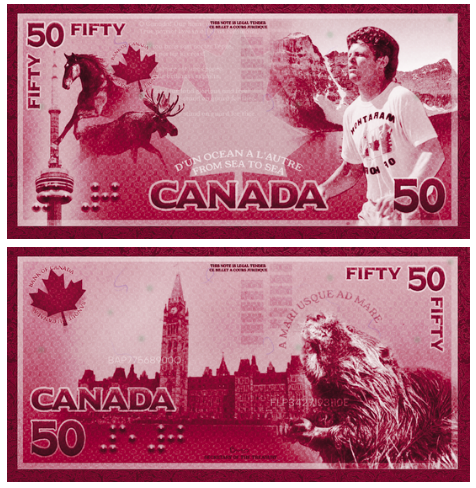
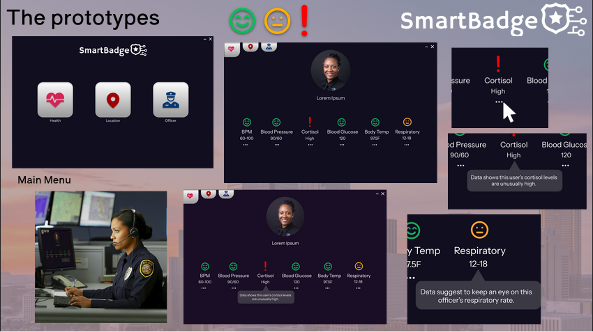
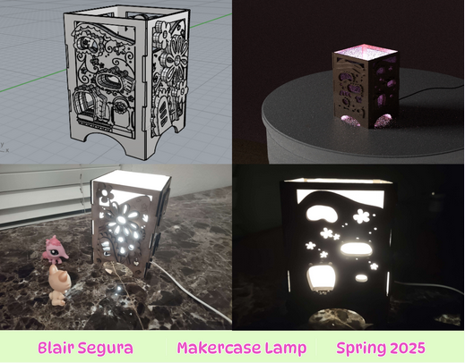

Blair Segura
Hello, my name is Blair Segura! I am currently a student at The University of Texas at Dallas studying UI and UX design.
I'm a general major in the school of Arts, Technology and Emerging Communications. I love creating things whether it be art or prototypes, or a website for a midterm exam!
Education
- University of Texas at Dallas (2022-Present)
- - Certificate in Applied Experience Design and Research
Employment
- None, but you could change that by hiring me!
Skills
- Graphic design and illustration
- Building brand identity through strong design
- Adobe Software
- (Illustrator, Photoshop, AfterEffects, etc.)
- Digital fabrication with Rhino3D
- Coding languages
- (Javascript, and soon HTML!)
- Microsoft Products
- (Word, Powerpoint, Excel, etc.)
Contact me:
Email
(2023) This is an example of my graphic design work!

(2026) This is an illustration I did for a color study of the Bezold Effect.

(2025) UI/UX concept design for the SmartBadge - a smart police badge.

(2025) 3D model, 3D render, and physical creation of a LPS-inspired lamp.